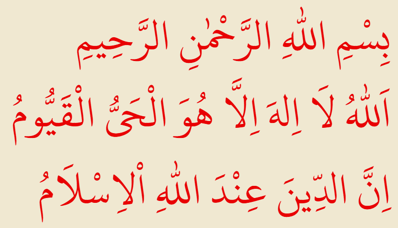
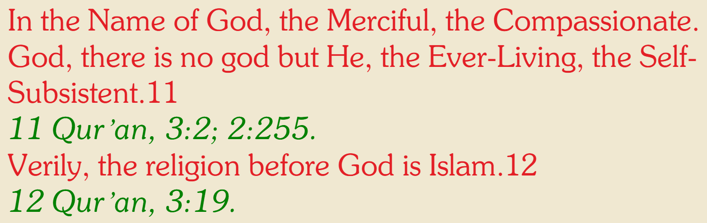
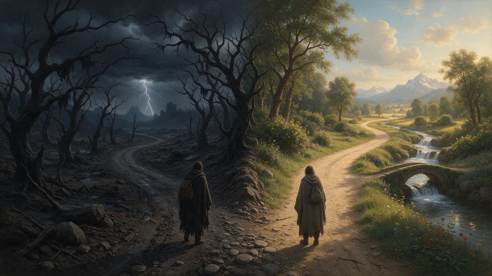
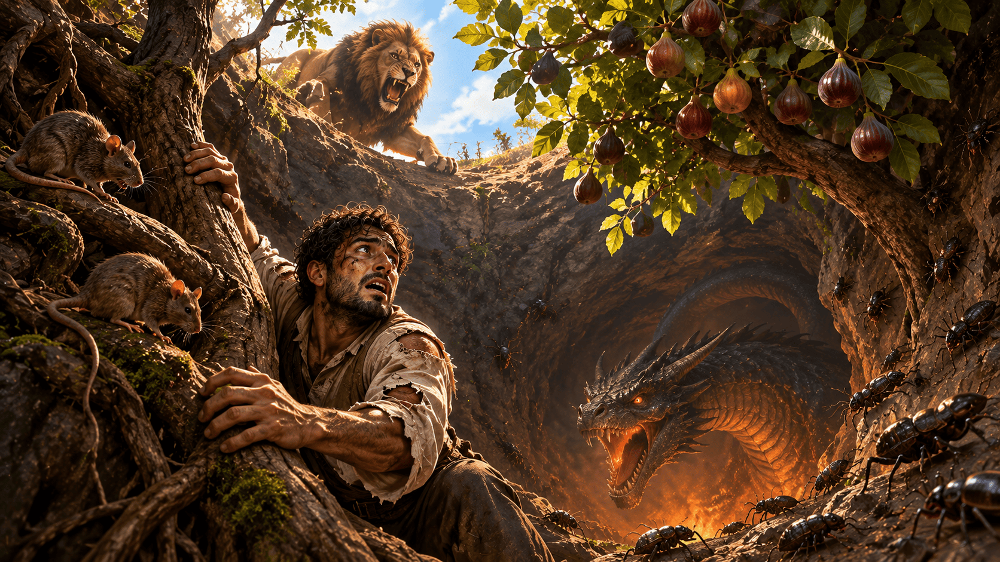

The Eigth Word of The Words by Imam Said Nursi explores how belief and disbelief lead to completely different ways of understanding the world. Its central message is that the same creation can appear either meaningful and beautiful or frightening and meaningless, depending on how a person understands its Creator.
Two brothers are travelling together when they reach a fork in the road. A wise man explains their choices:

The first brother chooses the right path, trusting in God.
The second brother The second chooses the left path because he wants freedom without responsibility.
The second brother eventually enters a vast desert. A terrifying beast chases him, so he jumps into a deep, dry well.
Inside the well, he discovers:
He sees everything as meaningless and frightening. Rather than trying to understand his situation, he distracts himself by eating the fruits, some of which are poisonous..
The first brother encounters exactly the same situation. However, he thinks differently. He considers that the desert must have a ruler, and perhaps the beast is under that ruler's command. He recognizes that the unusual events cannot simply be coincidences.
He begins to pray and asks the Owner of everything for help. Eventually, the wall opens, revealing a beautiful garden. The dragon becomes a doorway, and the beast becomes a servant that carries him forward.
The circumstances are the same, but the brothers experience them very differently.
The story is an allegory for human life.

| Symbol in the story | | What it represents |
|---|---|
| Two brothers | Believing and unbelieving people |
| Right path | The path of the Qur'an and faith |
| Left path | Disbelief and rebellion |
| Garden | Human social life, containing both good and bad |
| Desert | The world and earthly existence |
| Beast | Death |
| Well | Human life and the human body | Tree | Life itself | Two rats | Day and night, constantly shortening our lifespan | Dragon | The grave | Insects | Troubles and difficulties in life | Different fruits | God's blessings in this world, pointing towards the blessings of Paradise |
One particularly interesting symbol is the fig tree. Although it is a single tree, it produces many different kinds of fruit. Nursi uses this as an example of God's power: creating many different things from one source.
1. Faith gives meaning to existence
Without recognizing God, life can appear random, frightening and ultimately hopeless. Faith allows a person to see purpose and wisdom behind creation.
2. Religion provides freedom through discipline
The brother who chooses the right path accepts rules, but gains inner security. The other brother pursues unrestricted freedom but becomes a prisoner of fear and uncertainty.
3. Death has a different meaning through faith
For someone without belief in the Hereafter, death represents separation and the end of worldly happiness. For a believer, the grave becomes a doorway towards eternal life and reunion with loved ones.
4. Worldly blessings are signs, not the final destination
The fruits are samples of greater blessings awaiting us in Paradise. We should appreciate and enjoy the blessings of this world without becoming attached to them as though they were permanent.
5. Our outlook changes how we experience difficulties
The believer does not necessarily avoid hardship. Rather, faith, trust in God and gratitude help the believer face hardship with hope and patience.
The Eigth Word teaches that: The world is not inherently a meaningless prison: through faith in God, obedience to His guidance and trust in His wisdom, we can understand life's difficulties as part of a meaningful journey towards eternal happiness.